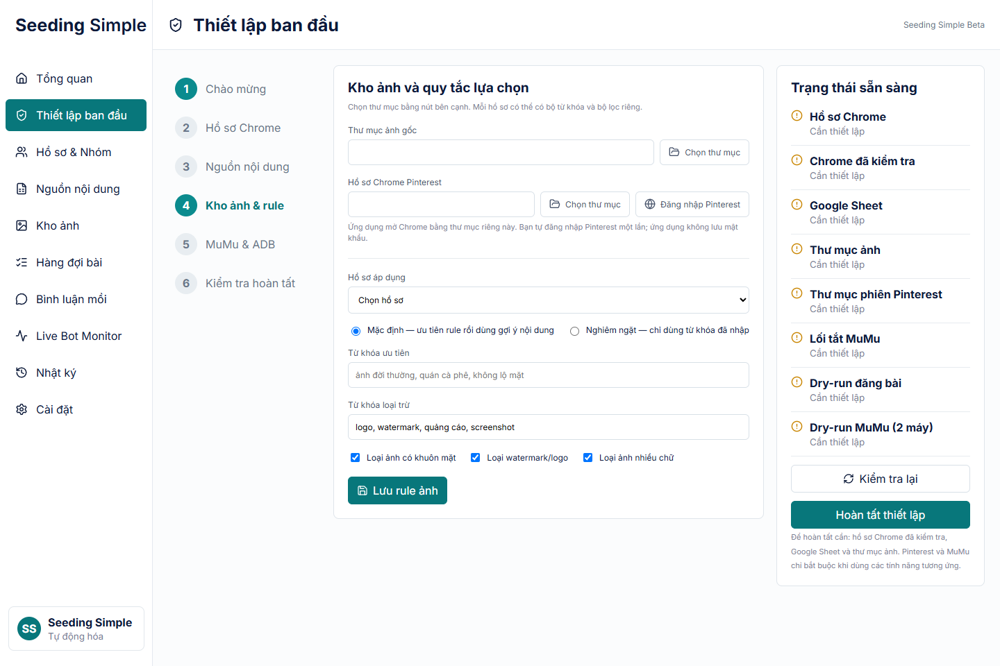
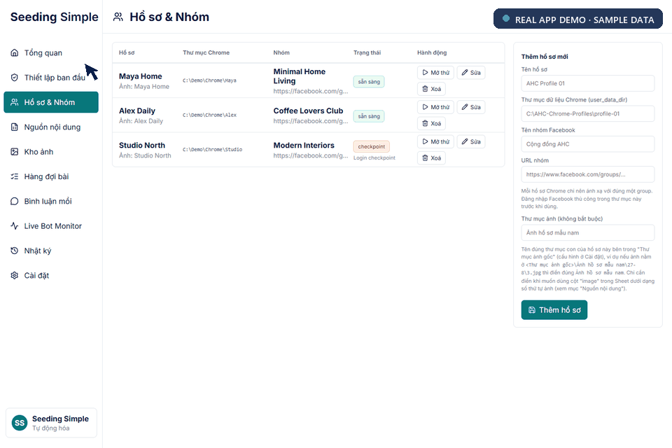
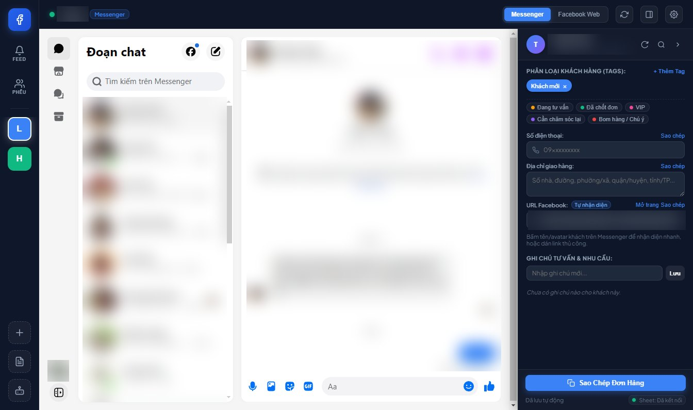
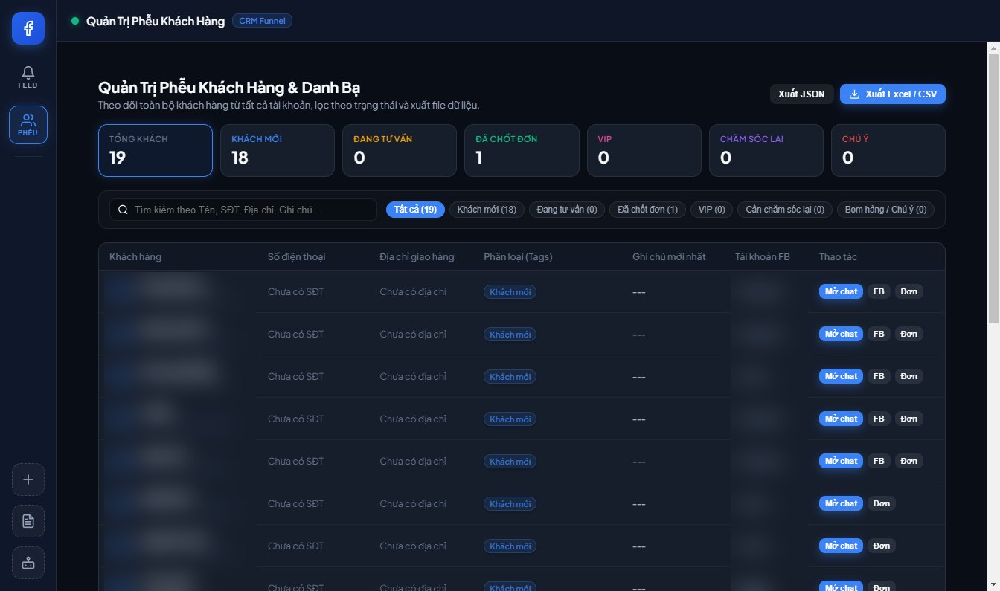

Local-first customer data
Profiles, operational history, and settings stay inside the customer’s Windows AppData folder rather than a shared vendor database.
Seeding Simple brings content intake, profile-specific image rules, review queues, and guarded automation into one calm Windows workspace.
Also in this portfolio: FB Messenger Hub →
Designed to standardize how small teams prepare, review, and run profile-based workflows—with control built in.
Profiles in one folder. Content in a spreadsheet. Images across local drives. Publishing in Chrome. Comments inside Android emulators. Seeding Simple turns those moving parts into a single, observable process.
Select a capability to explore exactly how the product supports the workflow.
Define keyword rules and quality filters per profile, so the image strategy can change without changing the workflow.
Set up once, then move from prepared content to live actions through deliberate checkpoints.
Map each Chrome profile to the right group and local data folder.
Read structured post content and schedules from a shared Google Sheet.
Use profile-specific keywords, exclusions, and quality filters.
Inspect content and media before anything is approved.
Validate browser and emulator setup without a live action.
Unlock publishing only after readiness conditions are met.
Profile folders and destinations are checked before the workflow begins.
Safe simulation
Validations, dry-runs, and manual review help prevent accidental publishing.
The product is designed around local accounts, changing platforms, and the need to make every automated step visible and reversible.
Profiles, operational history, and settings stay inside the customer’s Windows AppData folder rather than a shared vendor database.
Each profile can define preferred and excluded keywords, strict matching, face detection, watermark checks, and text-heavy image filtering.
Live posting requires a successful Chrome check. Live commenting requires successful checks on two distinct MuMu windows.
A familiar Setup.exe includes the application runtime, desktop shortcuts, guided onboarding, and separated customer data.
289 / 289automated tests passed
Windows x64installer, launch, and uninstall verified
Clean startzero bundled profiles, queue items, or customer credentials
Live posting and commenting remain disabled until the corresponding checks have passed.
Run 3 to 10+ personal Messenger accounts at once in one desktop app. Every account stays signed in, in its own session, and every customer message reaches one shared feed with a CRM beside the chat.
Each account gets its own colour on the left rail and its own unread badge. New messages from all accounts land in one feed. Click a message or an account to see how that account is kept separate.
3 – 10+personal accounts signed in on one computer
1 partitionper account for cookies, cache and storage
1 feedfor unread messages from every account
Per-accountsafety state, so one checkpoint pauses only that account

Each account runs in its own persist:fb_account_<id> partition, so cookies, cache and storage never cross between accounts.
Unread counts from every account appear as badges and a single timeline. Clicking a message jumps straight to the right account.
Opening a chat loads that customer's phone, delivery address, colour tags, profile URL and dated notes beside the conversation.
Edits are pushed to the team's Sheet through an Apps Script web app, and changes made on the Sheet are pulled back every 5 minutes.
All customers from all accounts in one table, counted by stage: new, consulting, closed, VIP, follow-up and watch-out. Export to Excel-safe CSV or JSON.
Name, phone, address, tags and notes are copied in one block, ready to paste into Viettel Post, GHTK or GHN.

9 / 9test groups passed on the macOS 1.1.0 build
Apple Silicon + Intel.dmg and .zip packages, plus the Windows build
Real-world checkslaunch, account switching, CRM and draft-without-sending tested by hand
I combine creativity, content, and automation to build smarter social media workflows and practical digital products.
I am a creative thinker with a strong interest in building brands and engaging social media experiences. Driven by curiosity and imagination, I enjoy transforming ideas into practical digital products, automated workflows, and more efficient ways of working.
My approach brings together creative planning, content thinking, problem-solving, and automation. I focus on making ideas compelling while building systems that are easier to operate, scale, and improve over time.
AI workflow building · Browser automation · AI influencer building · Data research · Application testing · Interface design